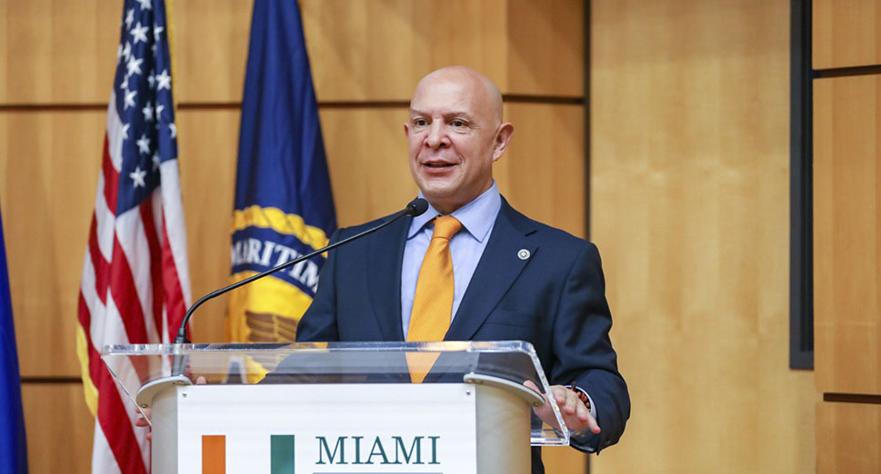

Jorge Duran: “Un puerto verde es un puerto más competitivo”

¿Cuáles son los principales ejes sobre los que CIP está trabajando para el mejoramiento de la actividad portuaria del continente?
En CIP trabajamos en seis áreas prioritarias determinadas por las autoridades portuarias nacionales de los países miembros de la CIP-OEA: Logística, innovación y competitividad; Protección y seguridad portuaria; Gestión portuaria sostenible y protección ambiental; Políticas públicas, legislación y regulación, Hidrobias, puertos interiores y de crucero y Relación Puerto – Ciudad, Responsabilidad Social y Equidad de Género. Dentro de cada una de estas áreas, nos enfocamos en cuatro objetivos: el dialogo político; la capacitación; entrenamiento de recursos humanos para fortalecer capacidades institucionales; asistencia técnica, incluida asesoramiento tecnológico; y trabajar activamente con el sector privado.
¿Digitalización y Medio Ambiente son los grandes desafíos que enfrentan los puertos en la actualidad?
Te diría que son dos de los grandes desafíos. Los puertos de la América Latina y del Caribe angloparlante están enfrascados, completamente dedicados a la digitalización de sus procesos portuarios. Este es un proceso que autoridades portuarias y terminales ya venían haciendo poco a poco y luego con la pandemia del COVID-19, este proceso se aceleró muchísimo y estos procesos comenzaron a agilizarse, y ahora, con la nota de la Organización Marítima Internacional (OMI) que declara que a partir del 1 de enero de 2024 todo puerto que quiera estar metido en el comercio global tiene que tener una ventanilla única marítima. De ahí, los puertos empiezan a subir de nivel utilizando herramientas tecnológicas como los collaborative decision making (CDM) software para ganar tiempo y beneficios a fin de evitar que el barco esté demasiado tiempo y ahí la actividad se vuelve más sostenible y gastan menos energía. El paso siguiente es el port community system(PCS), que es la luz al final del túnel. Respecto a medio ambiente también se está trabajando. Hoy en día un puerto verde es un puerto más competitivo, al respecto, la CIP ha realizado y publicado una Guía para Puertos Verdes, que sirve para hacer reportes de sustentabilidad, para certificar ISO 14000 / 14001. Es una herramienta que ayuda a mejorar la gestión verde a los puertos. A su vez, tenemos publicado un plan modelo de operaciones de emergencias portuarias.
¿Se suma a esos desafíos la responsabilidad social corporativa y la relación Puerto - Ciudad?
Absolutamente, esto es importantísimo. Generalmente el puerto y la ciudad crecen juntos. El puerto tiene una enorme responsabilidad y compromiso para con la ciudad. Nosotros le hemos eliminado la palabra corporativa, dejando solo como Responsabilidad Social, porque muchas veces es el gobierno, detrás de la autoridad portuaria la que promueve acciones de esta índole. Nosotros damos un premio anual que se llama “Premio Marítimo de las Américas” y una de las categorías es la de Puerto-Ciudad y hemos tenido muchas experiencias y acciones presentadas en este marco.

¿Entiende que los ODS pueden ser el punto de partida para que los puertos y toda la comunidad portuaria comiencen a trabajar en temas vinculados a la responsabilidad social y conservación del medio ambiente?
Los ODS representan un punto de partida, no solo para los puertos, sino para cualquier sector o industria que esté creciendo y quiera ser sustentable. Nosotros hemos hecho una interseccionalidad con los ODS y vemos que siete de ellos tienen impacto directo en la gestión portuaria y otros cuatro que indirectamente están dentro de la actividad. Si los puertos o terminales de la región están buscando una plataforma sobre la cual posarse para salir adelante, creo que los ODS son muy buenos para ser el impulso hacia la mejora en los temas que se plantean.
¿Qué rol cree que deben tomar las autoridades portuarias para avanzar definitivamente en un Port Community System?
Definitivamente el estado tiene que tomar un rol de coordinador, de supervisor, de hacerse responsable de la legislación necesaria para digitalización. Hay un caso en donde se estaba digitalizando operaciones en el recinto portuario y luego se enteraron que no había legislación respecto a firmas digitales, entonces se necesita de la legislación necesaria que apoye esto tipos de desarrollos en temas de digitalización. Generalmente, es la modernización tecnológica la que empuja la legislación, esta va un poquito más atrás por razones naturales. Claramente el estado tiene que tener un papal de coordinación entre todas las empresas de la comunidad portuaria, por lo menos en un principio ya que una vez que el sistema se va agilizando, el estado se puede echar para atrás, pero siempre coordinando. Yo creo que el estado y el privado tienen que ser socios para que haya un desarrollo integral.
¿Cómo trabaja la CIP respecto a capacitación? Hay demanda en este aspecto?
Hay una enorme demanda de capacitación en un sin número de temas. Antes de la pandemia, ofrecíamos 270 becas al año, y en 2021 dimos más de 800 becas en temas muy diversos como: digitalización, logística, seguridad, responsabilidad social, PCS, automatización, legislación, dragado, etc. La demanda es tanto de las autoridades nacionales portuarias como de los privados que muchas veces mencionan que de nada sirve tener el último adelanto tecnológico si no se cuenta con capital humano bien capacitado que la maneje o administre. Tal vez, nuestro rubro más importante y la contribución más significativa que tenemos para la comunidad portuaria, es nuestro programa de capacitación.. Si bien la virtualidad ha acercado distancias, notamos que la gente ya se cansa de estar frente a una computadora todo el día y vemos más demanda de cursos o seminarios presenciales a los que estamos regresando paulatinamente.
Jorge DURAN >
Durante más de 30 años, Jorge Durán ha colaborado con los gobiernos y el sector privado de las Américas en el diseño
y ejecución de proyectos de desarrollo en la América Latina y el Caribe. Ha trabajado en la Organización de Estados
Americanos (OEA) desde el 2003 como Asesor Principal en Tecnología para el Desarrollo, Gerente Principal de Desarrollo
Municipal y Capacitación, Director de la Oficina de Ciencia, Tecnología e Innovación y desde 2013 como Secretario de
la Comisión Interamericana de Puertos (CIP) de la Secretaría para el Desarrollo Integral (SEDI).
Fue profesor asociado en el Tecnológico de Monterrey y la Universidad Iberoamericana y cuenta con maestrías en Relaciones
Internacionales y Política Científica y Tecnológica, de la Universidad George Washington y licenciaturas en Psicología y
Estudios Latinoamericanos de la American University en Washington DC